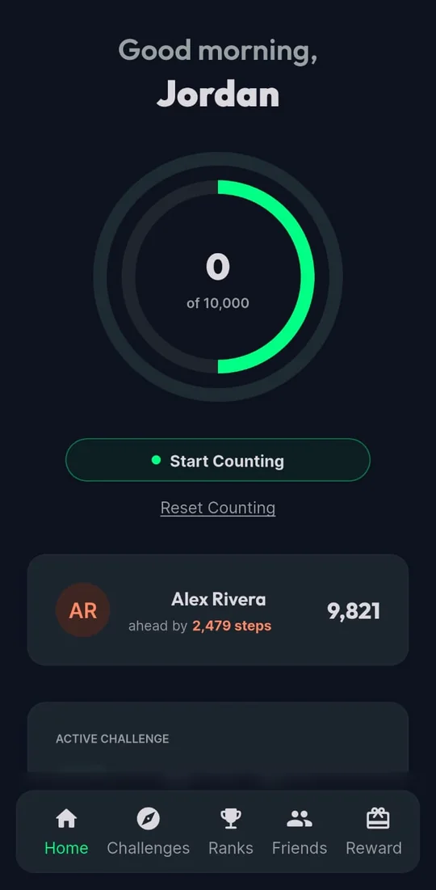
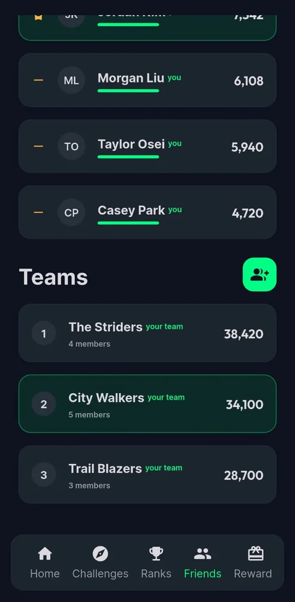
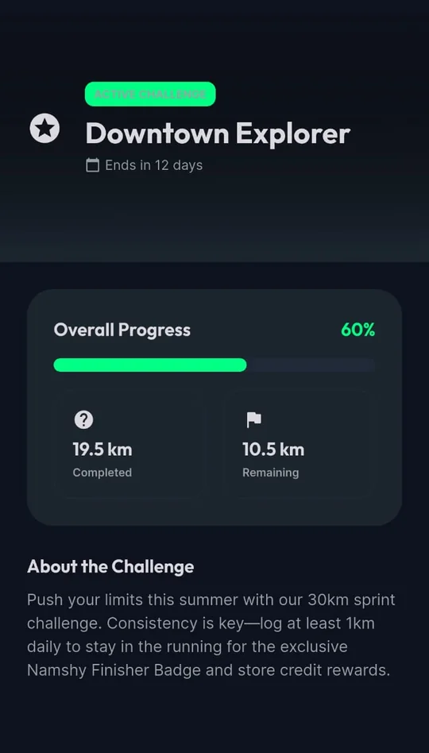
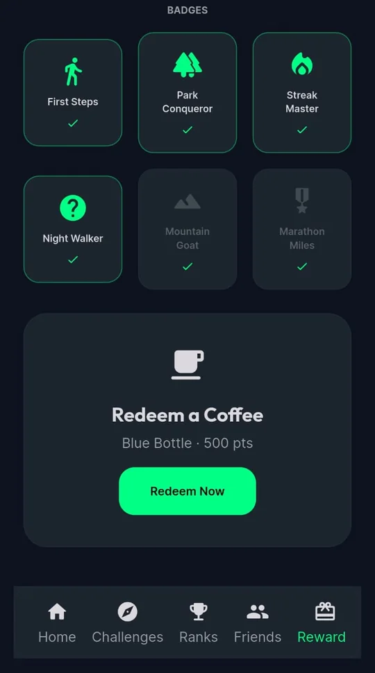

مشوار المليون خطوة بيبدأ بخطوة.
A million-step journey starts with one step.
يُعرض الآن على Google Play و App Store
بطولة 18,426 مصري ومصرية الأسبوع ده (أرقام توضيحية)
الأسبوع ده، مصر مشيت
إيرادات الأسبوع، بالخطوة
بطولة 18,426 مصري ومصرية، مشيوا مع بعض حوالي 314 مشوار من القاهرة للأقصر من السبت لحد النهارده.
كل مليون خطوة ≈ مشوار من القاهرة للأقصر، على أساس إن متوسط الخطوة حوالي 65 سم.
أرقام توضيحية في نسخة التصميم دي، وهتتربط بأرقام التطبيق الحقيقية.
حفلات الأسبوع
المشاهد
ست مشاهد من التطبيق، من شاشاته الحقيقية. كمّل نزول والشريط هيلفّ.
-

أول خطوة
ادخل بكود بيوصلك. خطواتك العادية بتتسحب لوحدها من Health Connect أو Apple Health، ولما تنزل تمشي مخصوص دوس «ابدأ العدّ».
-

التحديات
هدف وميعاد: 70,000 خطوة في أسبوع، أو مسافة معيّنة في شهر. خلّصها واكسب نقط وشارات.
التحديات بتتحسب من المشاوير اللي بتسجّلها في التطبيق.
-

صحابك
ضيف صحابك بالكود الشخصي بتاعهم، من غير بحث ولا أرقام تليفونات، وشوف مين سابقك.
بيشوفوا خطواتك، عمرهم ما بيشوفوا طريقك.
-

فريقك
اعمل فريق لفصلك أو قسمك أو شلّتك وابعت الكود. المشاوير المسجّلة بتتحسب للفريق.
-

كل كيلو بيفرق
كل تحدّي بيوريك إنت فين، وفاضل قد إيه، وبيخلص إمتى.
-

الترتيب والشارات
مسابقات بين الأفراد والصحاب والفرق، وترتيب بيتحدّث طول المسابقة. وكل إنجاز ليه شارة.
خطواتك لصحابك. وطريقك ليك لوحدك.
صحابك بيشوفوا خطواتك، مش طريقك. الموقع بيشتغل بس وإنت بتسجّل مشوار بدأته بنفسك. النت فصل؟ المشوار بيتحفظ على موبايلك وبيتبعت أول ما يرجع. وكل مشوار بيتراجع قبل ما يتحسب في المسابقات، واللي محتاج نظرة تانية بيراجعه بني آدم مننا.
أسئلة بتتسأل كتير
التطبيق على أندرويد وآيفون؟
أيوه، نمشي موجود على Google Play وعلى App Store.
خطواتي العادية طول اليوم بتتحسب؟
أيوه، في إحصائياتك اليومية وهدف الـ 10,000 خطوة. أما التحديات والمسابقات فبتتحسب من المشاوير اللي بتسجّلها في التطبيق.
أعمل فريق لشغلي أو مدرستي إزاي؟
اعمل فريق من التطبيق وهتاخد كود. أي حد يكتب الكود بينضم. ولو المكان كبير، اعمل فريق لكل فصل أو قسم.
صحابي هيعرفوا أنا ساكن فين؟
لأ. صحابك بيشوفوا خطواتك ومجموعك بس. طريقك ونقطة البداية والنهاية عمرها ما بتظهر لهم.
لو النت فصل وأنا ماشي؟
كمّل مشي عادي. التطبيق بيسجّل من غير نت وبيبعت كل حاجة أول ما ترجع أونلاين.
يُعرض الآن على كل موبايل
نزّل نمشي وخد أول خطوة. والـ 999,999 الباقيين هنعدّهم سوا.